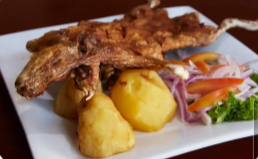
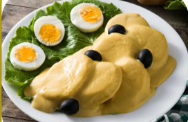
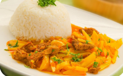
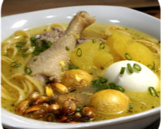

SABOR DE LA SIERRA

Pachamanca
Su nombre proviene del quechua y significa “olla de tierra”, porque se cocina bajo tierra con piedras calientes.

Cuy asado
Durante el Imperio Inca, el cuy tuvo gran importancia en la alimentación diaria y también en ceremonias religiosas.

Papa a la huancaína
Este plato nació a finales del siglo XIX y se prepara con salsa de ají amarillo, queso fresco y leche.

Olluco con carne
El olluco es un tubérculo andino cultivado desde hace miles de años y muy valorado porque crece en climas fríos.

Caldo de gallina
El caldo de gallina es uno de los platos más tradicionales y populares del Perú desde la época colonial.